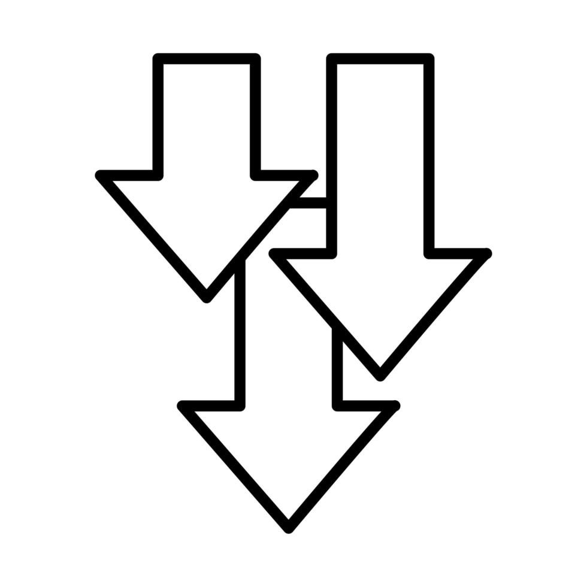
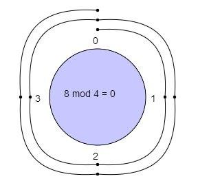

ALUMNO: Pech Serrano Jesus Alberto
MATERIA: Fundamentos de telecomunicación
Actividad: #886
Introducción
Para la mayoria de aplicaciones el sistema debe garantizar que los datos recibidos sean identicos a los datos transmitidos
|
Al transmitir bits, la interferencia puede alterar la señal. En un error de un solo bit, un 0 cambia a 1 o viceversa. En un error en ráfaga, varios bits se alteran, por ejemplo, el ruido en una transmisión de 1200 bps podría cambiar 12 bits de información. |

|
Error de un solo bit
Al transmitir bits, la interferencia puede alterar la señal. En un error de un solo bit, un 0 cambia a 1 o viceversa. En un error en ráfaga, varios bits se alteran, por ejemplo, el ruido en una transmisión de 1200 bps podría cambiar 12 bits de información.
Metodos de correcciónExisten 2 métodos de corrección de errores: |
 |
Forward error correction |
Retransmisión |
Redundancia
Para detectar o corregir errores, se necesitan enviar bits extra junto a nuestros datos. Esta redundancia es eliminada por el receptor, permitiendo detectar o corregir los bits corruptos.

|
En la detección, solo se verifica si hay un error, mientras que en la corrección se necesita saber cuántos bits están corruptos y sus ubicaciones, lo que aumenta la complejidad, especialmente en unidades de datos grandes. |

|
El emisor añade redundancia a los bits mientras un proceso crea una relación entre los bits redundantes y los bits verdaderos detectados. |
Aritmetica modular
 La aritmética modular utiliza un rango limitado de enteros definido por un módulo N, que establece un límite superior. Solo se consideran los enteros del 0 al N. En este sistema, si un número supera N, se divide por N y se toma el residuo como resultado.Si el número es negativo, se suma N hasta que sea positivo.
|
|
En la codificación por bloques, dividimos nuestro mensaje en bloques, cada uno con 'K' cantidad de bits llamada 'Palabra'. Se añaden 'r' bits redundantes para crear una longitud 'n = k + r'. |
Deteccion de Errores
Existen maneras de detectar errores usando la codificación por bloques


|
El receptor encuentra la lista de los 'Códigos' válidos. |
|
El 'Código' original ha sido cambiado a uno inválido. |
 Corrección de errores
Corrección de errores
En una corrección de errores, el receptor necesita saber que un solo 'código' es inválido. Asi que, necesita encontrar el 'código' original enviado.
Hamming Distance
Es el número de diferencias entre sus bits. Se encuentra usando un operador de XOR y contando el número de 1s en el resultado.
Códigos cíclicos
Son un tipo de Código de bloques con una propiedad extra.
 Si un 'Código' es rotado o sus dígitos se ponen al revés, el resultado será otro 'Código' diferente.
Si un 'Código' es rotado o sus dígitos se ponen al revés, el resultado será otro 'Código' diferente.
Códigos cíclicos
Son un tipo de Código de bloques con una propiedad extra. Si un 'Código' es rotado o sus dígitos se ponen al revés, el resultado será otro 'Código' diferente.
Implementación en el Hardware
Una ventaja de los códigos cíclicos es que el codificador y el decodificador pueden ser fácilmente implementados en hardware.
Ventajas de códigos cíclicos
Detectan errores de 1 bit, errores dobles, errores impares y errores de ráfaga. - Implementarse fácilmente en hardware y software.
Checksum
Este se basa en la redundancia y es muy utilizado por diversos protocolos de Internet, esto para la detección de errores.
USOS
Este consiste en enviar los bits al receptor junto con la suma de los bits dentro del paquete, permitiendo de esta manera al receptor comparar el resultado.
Checksum en el Internet
El Internet utiliza un checksum de 16 bits. En este, el receptor calcula el resultado al dividir el mensaje en palabras de 16 bits y sumarlas usando complemento a uno.
Detección de errores con Checksum
El receptor usa los siguientes pasos para poder detectar los errores; -- El mensaje (incluido el checksum) se divide en palabras de 16 bits. -- Se suman las palabras, incluyendo 1 más. -- La suma se complementa y se convierte en el nuevo checksum. -- Si el checksum es 0, el mensaje es aceptado; de lo contrario, será rechazado